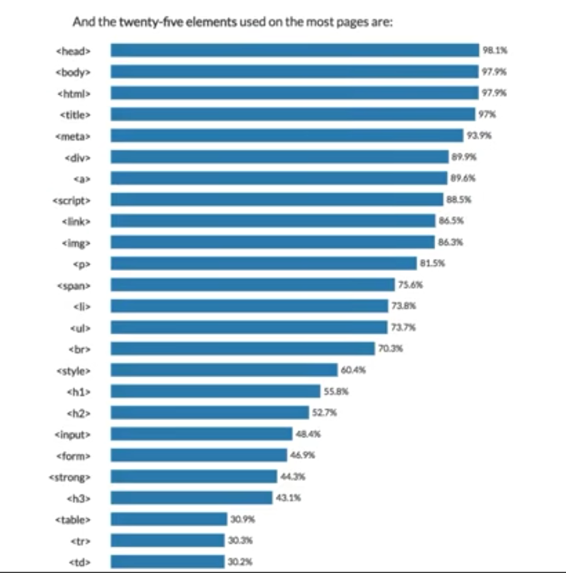

Markup Language
(Html) is the standard markup
language for creating web pages
and web applications.

Web browsers receive HTML documents from a web server
or from local storage and render the documents into
multimedia web pages. HTML describes the structure of
a web page semantically and originally included cues for
its appearance.